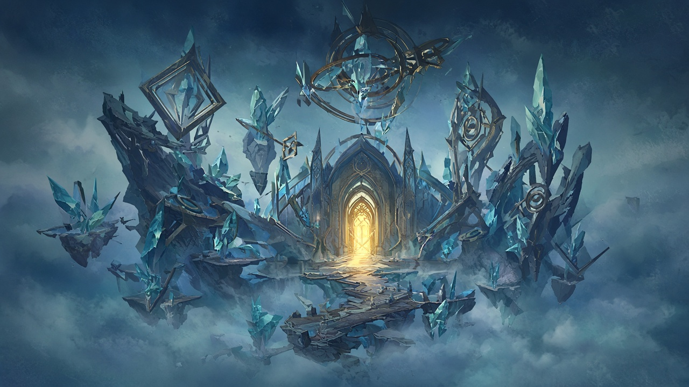

Welcome
Fractal Skip Hub is a crowdsourced Guild Wars 2 resource for fractal routes and skip strategies. Players share what works, vote on useful tips, and help the community clear fractals faster.
Looking for fight-specific gear? Use the Gear page to find recommended sigils and relics for fractals and raids based on your profession and role.

What you can do here
- Fractal Skips — browse community skip routes, submit new strategies, and see live updates as tips are posted.
- Gear — look up recommended sigils and relics by profession, role, and fight, with item details from the Guild Wars 2 API.
- Login — create an account so you can submit skips, vote on tips, and save gear preferences.
How it will work
Authenticated players will submit skip notes tied to a fractal. Everyone else can browse those tips and upvote the ones that actually save time. Daily fractal info and item details will come from the official Guild Wars 2 API, and new submissions will show up for connected users over WebSocket without a page refresh.
Placeholder note — login, database, API, and live updates are not wired up yet.
Login
Placeholder — authentication is not implemented yet. Sign in will later let you submit skips, rate tips, and save gear preferences.